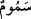

NE YAZIK
O SOLDAKİLERE!
41. Soldakiler; ne yazık o soldakilere!
42. İçlerine işleyen bir ateş ve kaynar su içinde,
43. Kapkara dumandan bir gölge altındadırlar;
44. Serin ve hoş olmayan.
45. Çünkü onlar bundan önce varlık içinde sefahete dalmışlardı.
46. Büyük günahı işlemekte direnir dururlardı.
47. Ve diyorlardı ki: Biz öldükten, toprak ve kemik yığını hâline geldikten sonra,
biz mi bir daha diriltileceğiz?
48. Önceki atalarımız da mı?
Bu âyet-i kerîme, kâfirlerin durumlarını ayrıntılı olarak açıklamaya bir başlangıçtır.
Allah Teâlâ’nın, “Âyetlerimizi inkâr edenler ise işte onlar soldakilerdir. Cezâları,
kapıları üzerlerine sımsıkı kapatılmış bir ateştir” (el-Beled 90/19-20) beyânından
anlaşıldığına göre, bu âyette geçen “soldakiler”den maksad kâfirlerdir.
“Ne yazık o soldakilere!” Yâni kıyâmet günü onların başlarına gelecek kötülükleri ve
durumlarının ne kadar zor ve ağır olacağını bilemezsin.
42. İçlerine işleyen bir ateş ve kaynar su içinde,
“İçlerine işleyen bir ateş.” Yâni onlar cesedleri yakan, ciğerleri dağlayan,
bedenlerin iliklerine kadar işleyen cehennem ateşindedirler.
Kamus’ta belirtildiğine göre âyette geçen
(semûm) kelimesi, ekseriyetle
gündüzleri esen yakıcı rüzgardır.
(harûr) ise geceleri esen kızgın rüzgardır; bazen